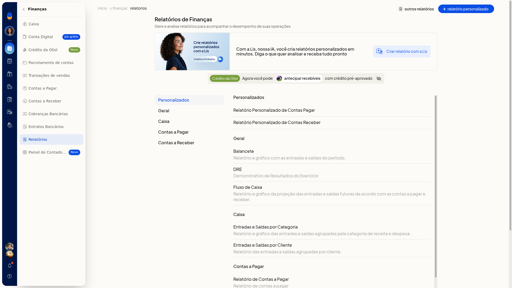
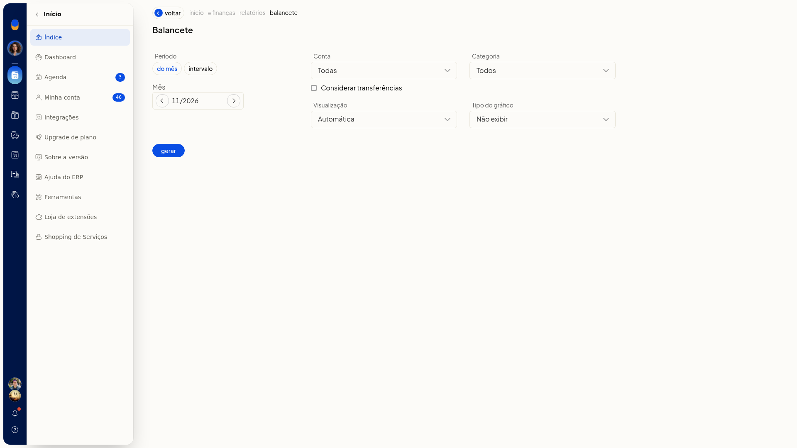
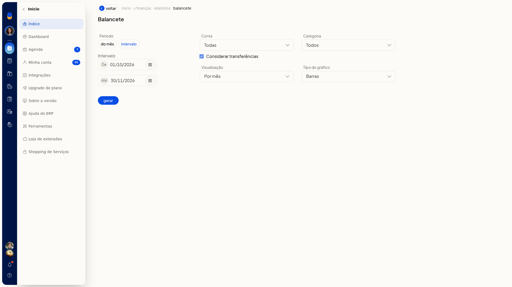
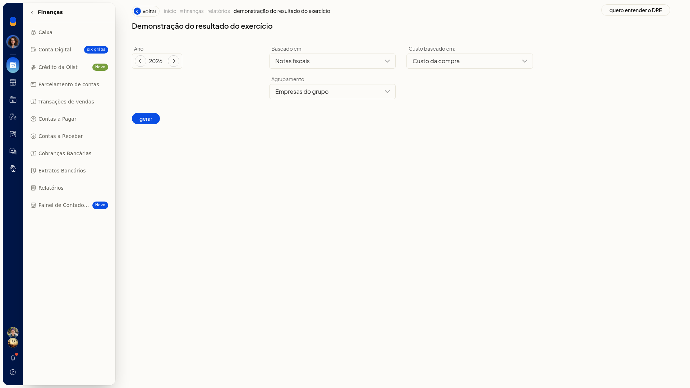
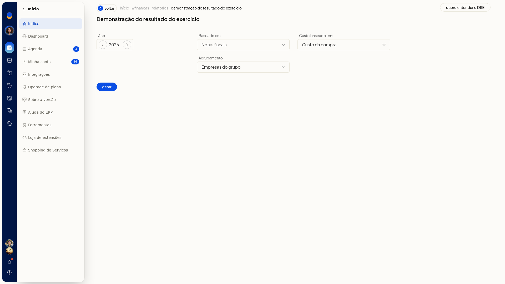
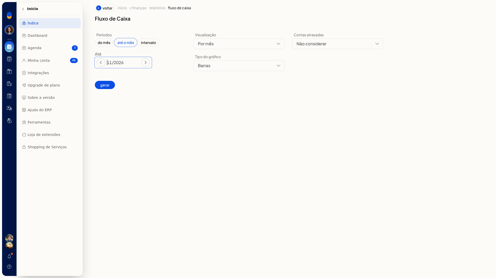
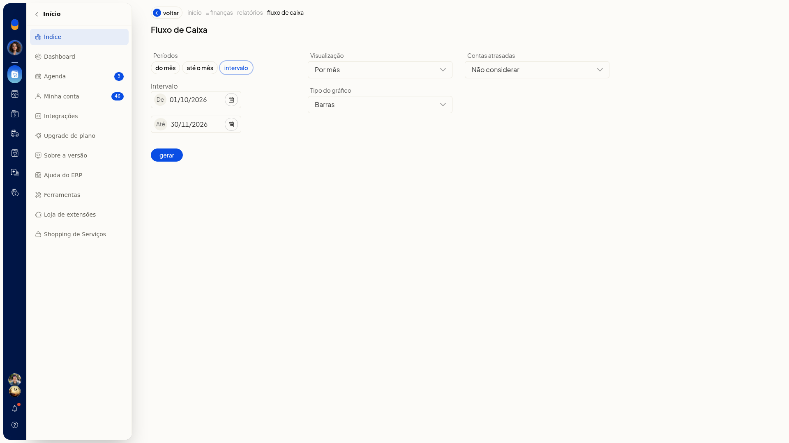
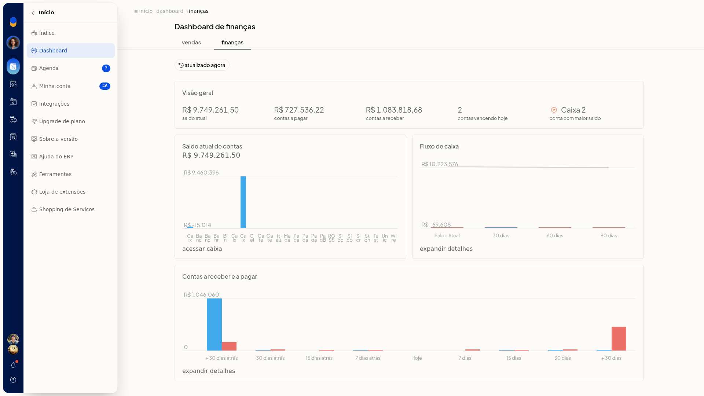
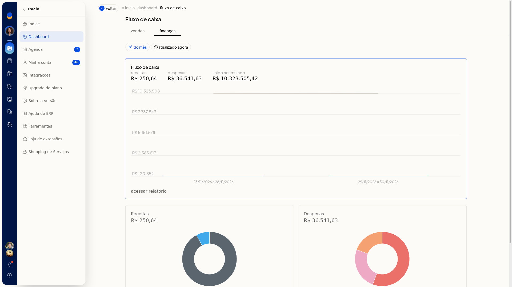

Relatórios financeiros: DRE, fluxo de caixa e balancete
No ERP da Olist, você acompanha o resultado e o caixa da operação por três relatórios da seção Geral: o Balancete, o DRE e o Fluxo de Caixa. O Balancete reúne entradas e saídas do período, com gráfico opcional. O DRE é o Demonstrativo de Resultados do Exercício. O Fluxo de Caixa projeta entradas e saídas futuras conforme as contas a pagar e a receber.
Os três ficam em Finanças > Relatórios. No dashboard de Finanças também há indicadores de saldo, contas e fluxo, com atalho para o mesmo Fluxo de Caixa.
Importante
- O Fluxo de Caixa é uma projeção conforme as contas a pagar e a receber.
- No DRE, a base do demonstrativo é notas fiscais ou pedidos de venda.
- Nos três relatórios, os campos de filtro não são obrigatórios.
Instruções
Como consultar o balancete
-
Acesse Finanças > Relatórios.
-
Na seção Geral, clique em Balancete. A descrição na lista é relatório e gráfico com as entradas e saídas do período.

-
Escolha o período Do mês ou Intervalo.

-
Em Do mês, informe o Mês no formato mês/ano, como 11/2026. Em Intervalo, informe De e Até no formato DD/MM/AAAA.
-
Se quiser, selecione Conta (Todas ou uma conta já cadastrada) e Categoria (Todos ou uma categoria já cadastrada), marque Considerar transferências e escolha Visualização e Tipo do gráfico. Em Visualização, as opções são Automática, Por dia, Por semana ou Por mês. Em Tipo do gráfico, as opções são Não exibir, Linhas ou Barras.

-
Clique em Gerar para gerar o relatório de entradas e saídas do período.
Como consultar o DRE
-
Acesse Finanças > Relatórios.

-
Na seção Geral, clique em DRE. A descrição na lista é Demonstrativo de Resultados do Exercício.

-
Informe o Ano com quatro dígitos, como 2026.
-
Em Baseado em, escolha Notas fiscais ou Pedidos de venda.
-
Em Agrupamento, escolha Empresas do grupo ou a empresa listada na conta.
-
Em Custo baseado em, escolha Custo da compra ou Custo médio. A lista também tem a opção Selecione. Se quiser ajuda sobre o demonstrativo, acesse o link Quero entender o DRE.
-
Clique em Gerar para gerar o demonstrativo do exercício.
Como consultar o fluxo de caixa
-
Acesse Finanças > Relatórios.
-
Na seção Geral, clique em Fluxo de Caixa. A descrição na lista é relatório e gráfico da projeção das entradas e saídas futuras de acordo com as contas a pagar e receber.
-
Escolha Do mês, Até o mês ou Intervalo.
-
Em Do mês ou Até o mês, informe o Mês no formato mês/ano, como 11/2026. Em Intervalo, informe De e Até no formato DD/MM/AAAA.

-
Escolha Visualização, Tipo do gráfico e, em Contas atrasadas, Considerar no saldo inicial ou Não considerar. Em Visualização, as opções são Automática, Por dia, Por semana ou Por mês. Em Tipo do gráfico, as opções são Não exibir, Linhas ou Barras.

-
Clique em Gerar para gerar a projeção de fluxo de caixa.
Como abrir o fluxo de caixa pelo dashboard
-
Abra o dashboard pelo item Início do menu lateral e selecione a aba Finanças. Se a opção não aparecer para você, peça acesso ao administrador da conta.
-
No widget Fluxo de caixa, veja o saldo e os horizontes de 30, 60 e 90 dias. A mesma aba mostra visão geral de saldo, contas a pagar, contas a receber, contas vencendo hoje e conta com maior saldo, além de saldo por conta.

-
Use expandir detalhes para o gráfico de receitas, despesas e saldo acumulado e para os agrupamentos de receitas e despesas. No período do fluxo, as opções são do mês, até o mês ou do intervalo. Aplicar confirma a escolha e Cancelar descarta.

-
Clique em acessar relatório. Abre a mesma tela de filtros do Fluxo de Caixa, com Do mês, Até o mês ou Intervalo. Clique em Gerar para gerar a projeção.
Informações adicionais
- No Balancete, Do mês mostra Mês e Intervalo mostra De e Até.
- No Fluxo de Caixa, Do mês e Até o mês mostram Mês. Intervalo mostra De e Até.
- Voltar devolve o catálogo Relatórios de Finanças, com as seções Personalizados, Geral, Caixa, Contas a Pagar e Contas a Receber.